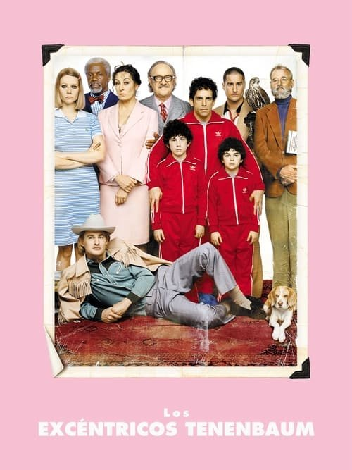

Los Tenenbaums. Una familia de genios (2001)
Sinopsis Rápida
Una familia de niños prodigio, ahora adultos disfuncionales, se reúne tras años de distanciamiento, desencadenando un torbellino de excentricidades, secretos y un pasado que regresa para atormentarlos.
Sinopsis Detallada
Los Tenenbaums sigue las vidas de tres hermanos excepcionalmente talentosos pero profundamente infelices: Chas, Margot y Richie. Cada uno lucha con las secuelas de una infancia marcada por el abandono y las altas expectativas de su padre, Royal Tenenbaum. La película explora temas de familia, fracaso y redención a través de un humor agridulce e inolvidable. La dirección de Wes Anderson crea un mundo visualmente distintivo y elegante, lleno de detalles que enriquecen la narrativa.
¿Por qué tenés que verla?
- Una comedia dramática magistralmente escrita y dirigida que te hará reír y reflexionar.
- El estilo visual único de Wes Anderson, con su estética simétrica y paleta de colores, es una obra de arte en sí misma.
- Su influencia en el cine independiente y su impacto cultural son innegables, inspirando a numerosos directores y cineastas.
- Un reparto estelar que ofrece interpretaciones memorables.
Idea Extra
Análisis del simbolismo en la estética visual de Wes Anderson en 'Los Tenenbaums'
{{CONTENIDO_RELACIONADO}}